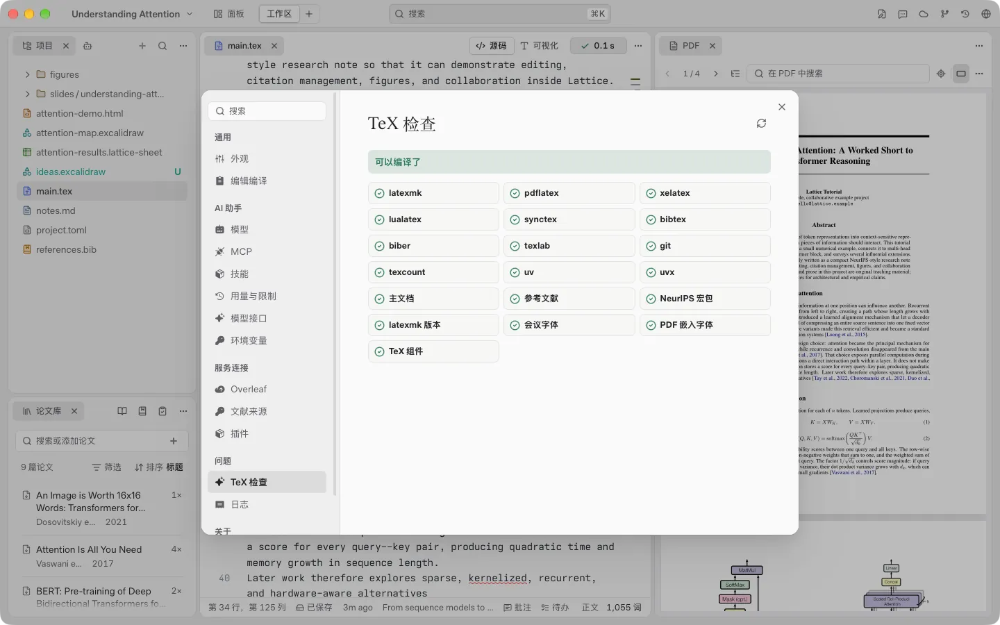
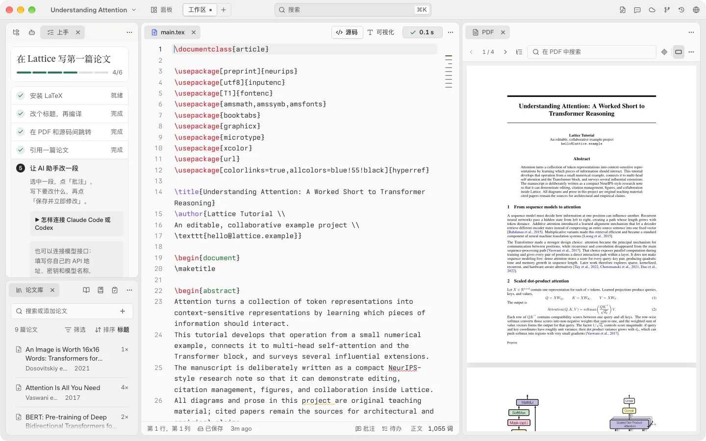

快速上手
安装 Lattice
- 从 最新版本 下载
.dmg，把 Lattice 拖进「应用程序」。Intel Mac 请下载以_x64.dmg结尾的文件。也可以用 Homebrew：brew install --cask lattice。 - 打开 Lattice。它会自动更新：新版本下载好后，Lattice › 重新启动以更新… 即可安装。可在 设置 › 编辑编译 › 更新 中修改。
Lattice 需要 macOS 14 或更高版本。Linux（AppImage）和 Windows 版本仍是实验性的，没有 AI 助手。
Apple 芯片 Mac 上的原生 Lattice
在搭载 Apple 芯片的 Mac 上，Lattice 可以切换到它的原生版本：界面由 Mac 直接绘制，而不再是网页，外观和用法都一样。带来这个功能的更新之后，Lattice 会询问一次；选了 以后再说 或 不再询问 之后，也可以随时在 设置 › 编辑编译 › 切换到新的 Lattice 中切换。
- 会带过去的： 第一次切换时，最近的项目、设置、主题、插件、项目模板、Agent 技能和 Overleaf 关联。项目文件夹本身无论如何都不受影响。
- 不一样的地方： 原生版本用 macOS 自带的检查器检查拼写，没有语法检查，也没有其他语言的词典。过去的 Agent 对话不会在里面显示。
- 切换回去： 在原生版本中打开 设置 › 编辑编译 › 切换回经典版本，就会把经典版本装回原处。经典版本打开时，数据和切换前一样；在原生版本里做的改动不会同步回来。以后再次切换时，原生版本保留它自己的设置、主题、插件和 Overleaf 登录，并加入你在经典版本里打开过的最近项目。
配置 TeX
Lattice 使用你自己的 TeX 发行版（MacTeX 或 TeX Live）编译 PDF。如果还没有安装，Lattice 可以帮你安装 BasicTeX：这是「上手」清单的第一步，找不到 TeX 的编译也会提示安装。编译时发现缺少的 LaTeX 宏包，也可以直接在编译问题里安装。
随时可以打开 设置 › TeX 检查 查看环境。它列出编译用到的每个工具，以及当前项目需要的东西（主文档、参考文献、会议模板宏包和字体）。显示 可以编译了 就说明一切就绪。有红色项时，点 安装所需工具 即可；添加论文和查找引用需要一个小的 Python 工具（uv），同一个按钮也会安装它。

打开或新建项目
左上角的项目名菜单和 文件 菜单里有相同的操作：
- 打开文件夹（
⌘O）：任何包含.tex文件的文件夹，Lattice 直接在原处编辑。 - 新建项目（
⌘⇧N）：起个名字，选一个会议模板（NeurIPS、ICML、ICLR、ACL、CVPR、AAAI 或学位论文模板）或你自己保存的模板，再点 选择位置。 - 克隆仓库…：来自 GitHub 或其他地方的 Git 仓库。
- 从 Overleaf 打开：见 Overleaf 同步。
- 导入 Overleaf ZIP…：从 Overleaf 下载的 ZIP 项目。

最近的项目在 文件 › 打开最近使用。一个窗口可以在标题栏以标签形式打开多个项目。
「上手」清单
项目菜单中的 新手教程 会打开一篇示例论文，旁边是 上手 清单，共六步：安装 LaTeX、修改标题并编译、在 PDF 和源码之间跳转、引用一篇论文、让 AI 助手修改一段话、开始写你自己的论文。每一步都有 指给我看，自己完成的步骤会自动打勾。可以从 面板 › 上手 重新打开清单。
